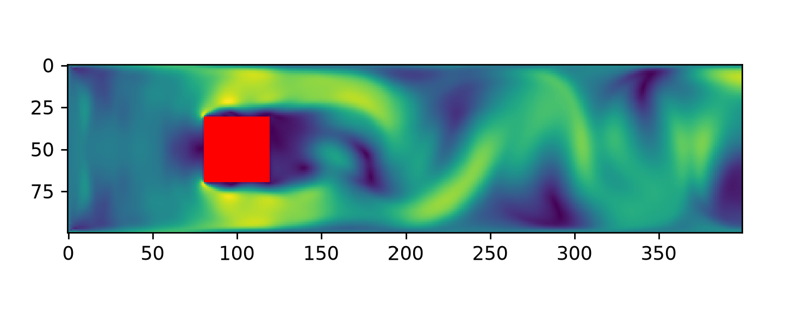

Project Overview
Project Objective
Conventional CFD workflows often require substantial setup before a geometry can be analyzed. The objective of this project is to develop a lightweight, interactive CFD solver capable of generating flow fields and aerodynamic data from user-defined geometries while maintaining direct access to the underlying numerical method.
Solver Implementation
- Developed a D2Q9 lattice Boltzmann solver directly from the governing distribution functions, without relying on existing CFD software.
- Implemented inlet, outlet, wall, and interpolated curved-boundary treatments; Smagorinsky subgrid modelling; and momentum-exchange lift and drag extraction.
- Implemented interactive geometry drawing, breadth-first-search autofill, NACA airfoil import, flow-field visualization, and automated force-history analysis.
- Ported the solver from Python to C++, achieving an approximately 15× speedup before further compiler optimization.
NACA 0012, Re = 2,000: St = 1.1895 versus 1.1706 published (1.6% difference); mean CL = 0.370 versus 0.355 (4.1% difference).
Cylinder, Re = 150: CD = 1.409 versus 1.39 published (1.4% difference); St = 0.195 versus 0.183 (6.6% difference).
Current scope: two-dimensional, incompressible, low-Mach-number external flow. Validation is case-specific and does not imply general-purpose CFD accuracy.

Numerical Methodology and Solver Development
Finite-difference, finite-volume, and lattice Boltzmann methods were evaluated against the requirement to accommodate varied geometries without requiring the user to generate a body-fitted mesh. I selected LBM because its regular lattice simplifies geometry insertion, local numerical updates, and future parallelization, while remaining suitable for incompressible external-flow visualization.
The solver advances nine particle-distribution populations per node through collision and streaming. Macroscopic density and velocity are reconstructed from these distributions, while viscosity and Reynolds number are controlled in lattice units through the relaxation time. The initial implementation was developed and tested in Python before being ported to C++ following improvements in numerical stability.
Boundary Conditions and Numerical Stability
Development focused primarily on boundary-condition implementation and the numerical stability of open-domain simulations. I tested Zou–He and equilibrium inlets, convective and non-equilibrium-extrapolation outlets, slip-symmetry far-field boundaries, and multiple bounce-back formulations. The current prototype uses a smoothed equilibrium inlet, a non-equilibrium-extrapolation outlet, and interpolated bounce-back at solid surfaces.
At low relaxation times and higher Reynolds numbers, reflected disturbances and high-wavenumber modes produced non-physical streaking and eventual divergence. The instability was investigated through domain-size studies, boundary-condition comparisons, and analysis of local velocity fields. A Smagorinsky subgrid model was subsequently implemented to provide localized increases in effective viscosity. This allowed cases near τ = 0.51 to remain stable without the excessive global damping observed in earlier implementations.
Geometry Representation and Aerodynamic Loads
Users can draw arbitrary obstacles on a grid, with breadth-first search used to fill closed geometries automatically. Airfoil coordinates can also be imported directly. For curved surfaces, the geometry is fitted and sampled to determine link distances for interpolated bounce-back, reducing the geometric error associated with a stair-stepped boundary representation. Lift and drag are calculated using the momentum-exchange method and recorded as time histories for transient and frequency analysis.
C++ Implementation and Computational Performance
A direct Python-to-C++ port produced an approximately 15× speedup. Compiling the C++ implementation with -O3 reduced a 400 × 200-node, 1,000-step test from 120.07 s in the debug build to 3.18 s without plotting. The larger 1,200 × 600-node validation cases ran at approximately 45–51 ms per time step. Further performance improvements will focus on a GPU-native update kernel with fused collision and streaming operations and more efficient memory access.
Validation
Benchmark Methodology and Results
Two complementary benchmark cases were selected. The airfoil case evaluates separated flow, unsteady lift, and chord-based shedding frequency around an aerodynamic geometry. The cylinder case evaluates a canonical bluff-body wake with established reference values for drag and Strouhal number. Shedding frequencies were calculated from successive force-history peaks after excluding the initial transient.
NACA 0012 · Re = 2,000 · α = 8°
- Domain: 1,200 × 600 nodes; chord: 130 nodes; 45,000 time steps.
- Mean CL = 0.3696 versus 0.355 published: 4.1% difference.
- Mean CD = 0.1320 versus 0.118 published: 11.8% difference.
- St = 1.1895 ± 0.0271 versus 1.1706 published: 1.6% difference.
- 17 detected peaks and 16 complete shedding periods; uncertainty of the mean St = ±0.0068.
Circular Cylinder · Re = 150
- Interpolated-boundary result: mean CD = 1.4089 versus approximately 1.39 published: 1.4% difference.
- St = 0.1951 versus 0.183 published: 6.6% difference.
- Mean CL = −0.0069, close to the expected zero mean for a symmetric cylinder.
- Drag oscillated at twice the lift frequency, consistent with alternating vortex shedding.
Reference for the airfoil comparison: D. F. Kurtulus, “Vortex flow aerodynamics behind a symmetric airfoil at low angles of attack and Reynolds numbers.”
Flow Visualization and Solver Interface


Numerical Challenges and Limitations
Open-Boundary Reflections
Initial pressure and force histories exhibited drift due to disturbances reflecting from the outlet and interacting with the body. I compared multiple inlet and outlet formulations, initialized the domain at the freestream equilibrium state to reduce the startup transient, and adopted a non-equilibrium-extrapolation outlet for the current solver.
Numerical Instability at Higher Reynolds Numbers
As τ approached 0.5, regions of high local velocity produced non-physical streaking and eventual divergence. Domain-size studies were used to distinguish blockage effects from collision instability. A Smagorinsky subgrid model was implemented to provide localized dissipation while retaining resolved wake structures.
Curved-Boundary Representation
Conventional bounce-back represents curved airfoil and cylinder surfaces using a stair-stepped approximation, introducing geometric errors into aerodynamic force calculations. I implemented spline-based surface sampling and interpolated bounce-back, then compared interpolated, halfway, and full bounce-back formulations using the cylinder benchmark.
Quantitative Assessment of Aerodynamic Results
Qualitative flow visualization was supplemented by quantitative analysis using momentum-exchange force extraction, transient exclusion, automated peak detection, shedding-period statistics, and uncertainty reporting. Lift, drag, and shedding frequency were subsequently compared against published airfoil and cylinder benchmark results.
Current Limitations and Future Work
The solver remains a two-dimensional, low-Mach-number prototype. Force coefficients, particularly airfoil drag, exhibit greater discrepancies from published reference values than shedding frequency. The cylinder frequency result is also based on a limited number of complete shedding cycles. Further development will focus on domain-size and spatial-resolution studies, additional benchmark configurations, improved curved-wall treatment, and GPU parallelization.